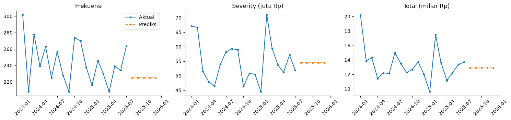
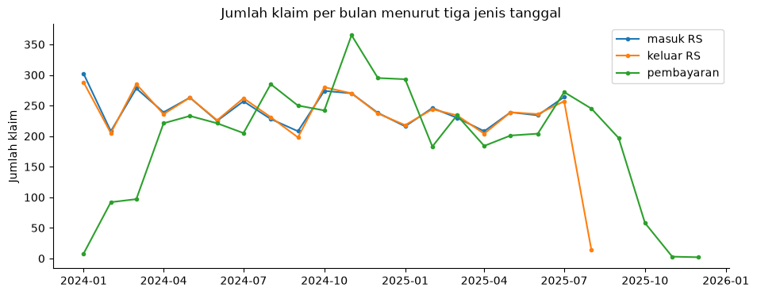
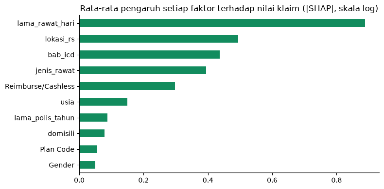

Forecasting · Machine learning · Kompetisi
Prediksi Klaim Asuransi Kesehatan
Memprediksi frekuensi, rata-rata nilai, dan total klaim bulanan sebuah portofolio asuransi kesehatan untuk lima bulan ke depan, lalu mencari faktor yang paling menentukan besarnya klaim. Dikerjakan untuk Data Science Competition Mathematical Challenge Festival (MCF) ITB 2026.
- 4.627klaim dari 4.096 polis
- 10metode forecasting diuji
- 9,9%MAPE gabungan backtest
- 0,50R² model nilai klaim

Masalah
Klaim asuransi kesehatan individu terus naik, dan kenaikan itu akhirnya membuat premi makin mahal. Panitia meminta dua hal: memprediksi frekuensi, severity (rata-rata nilai per klaim), dan total klaim per bulan untuk Agustus sampai Desember 2025, serta menemukan faktor yang paling berpengaruh terhadap nilai klaim supaya perusahaan bisa melakukan seleksi risiko, pencegahan, dan deteksi dini.
Prediksi dinilai dengan MAPE untuk masing-masing target, lalu dirata-rata.
Data
4.096 polis dan 4.627 klaim yang terjadi antara Januari 2024 dan Juli 2025, lengkap dengan jenis perawatan, diagnosis ICD, lokasi rumah sakit, tiga tanggal, dan nilai klaim.
Bulan klaim dihitung dari tanggal pasien masuk RS
Panitia tidak menyebut tanggal mana yang dipakai. Klaim rata-rata baru dibayar dua bulan setelah pasien pulang, sehingga deret per tanggal bayar terlihat rendah di awal 2024 dan anjlok di akhir 2025. Itu efek batas periode data, bukan perubahan jumlah klaim. Deret per tanggal masuk RS tidak punya masalah ini.

Jumlah nasabah tetap
Semua polis mulai berlaku antara 2011 dan 2018. Tidak ada polis baru, jadi naik turunnya klaim bukan karena pertambahan nasabah.
Klaim raksasa menggeser severity bulanan
Median klaim Rp14,5 juta, tetapi 1% klaim terbesar (47 klaim) bernilai di atas Rp634 juta. Ke-47 klaim ini menyumbang 18,5% seluruh nilai klaim, dan di Februari 2025 sampai 36% total bulan itu. Sembilan dari sepuluh klaim terbesar adalah rawat inap di luar Indonesia. Lonjakan seperti ini hampir mustahil ditebak per bulan.
Forecasting
Karena data hanya 19 bulan, metode dipilih dengan rolling-origin backtest: dari setiap bulan antara Juni 2024 dan Februari 2025, metode hanya melihat data sebelumnya, memprediksi 5 bulan ke depan, lalu dicocokkan dengan data asli. Horizon 5 bulan sama dengan tugas kompetisi.
| Metode | Frekuensi | Severity | Total | Gabungan |
|---|---|---|---|---|
| Rata-rata 6 bulan × 0,95 (final) | 7,6% | 10,5% | 11,7% | 9,9% |
| Rata-rata 6 bulan | 8,1% | 10,9% | 12,4% | 10,5% |
| Rata-rata semua bulan | 9,0% | 12,0% | 14,3% | 11,8% |
| Holt dengan tren teredam | 8,7% | 14,0% | 17,8% | 13,5% |
| Tren linear | 9,8% | 16,7% | 22,8% | 16,4% |
Metode yang menangkap tren justru lebih buruk
Dengan jumlah nasabah yang tetap dan deret sependek 19 bulan, "tren" yang ditangkap lebih banyak berupa kebetulan. Rata-rata enam bulan terakhir paling stabil di ketiga target.
Prediksi diturunkan 5% karena sifat MAPE
MAPE menghukum prediksi yang terlalu tinggi lebih berat daripada yang terlalu rendah. Faktor 0,95 memperbaiki ketiga target sekaligus di backtest. Nilainya sengaja dibatasi di kelipatan 0,05 supaya tidak terlalu menyesuaikan diri dengan sembilan titik backtest. Faktor 0,97 memberi skor gabungan yang sama.
Prediksi final per bulan: sekitar 225 klaim, severity Rp54,5 juta, dan total Rp12,9 miliar. Ketiga target diprediksi dan dinilai terpisah, jadi 225 × Rp54,5 juta (Rp12,3 miliar) tidak sama persis dengan prediksi total.
Faktor penentu nilai klaim
Model LightGBM memprediksi nilai satu klaim (skala log) dari ciri nasabah dan klaimnya. Validasinya memakai GroupKFold per nomor polis, supaya klaim dari nasabah yang sama tidak muncul di data latih dan uji sekaligus. Model menjelaskan sekitar separuh variasi nilai klaim (R² 0,50), dibanding 0,15 untuk patokan rata-rata per jenis perawatan.

Lama rawat adalah penentu terbesar
Median klaim tanpa menginap Rp2,9 juta, rawat 6 sampai 10 hari Rp67 juta, dan lebih dari 10 hari Rp199 juta. Pengendalian biaya paling berdampak di kasus rawat inap panjang.
Lokasi rumah sakit lebih penting daripada jenis plan
Klaim di Singapura hanya 22% dari jumlah klaim, tetapi 50% total nilai. Median klaim di sana Rp53 juta, dibanding Rp9 juta di Indonesia. Plan dan lokasi saling terkait: semua klaim plan M-003 terjadi di Indonesia, sedangkan separuh klaim plan M-001 di Singapura. Di model, pengaruh plan kecil setelah lokasi RS diketahui, jadi perbedaan biaya antarplan sebagian besar terjelaskan oleh tempat berobat.
Tiga kelompok diagnosis menyumbang 58% total klaim
Kanker (30%), jantung dan pembuluh darah (16%), serta otot dan tulang (12%). Dengan usia rata-rata nasabah yang mengajukan klaim sekitar 59 tahun, skrining dini kanker dan jantung adalah kandidat program pencegahan yang paling relevan.
Keterbatasan
- Hanya 19 bulan data, sehingga pola musiman tahunan tidak bisa diuji.
- Bulan klaim diasumsikan dihitung dari tanggal pasien masuk RS. Kalau panitia memakai tanggal lain, skor resmi bisa berbeda dari hasil backtest.
- Faktor koreksi 0,95 dipilih dari backtest yang sama dengan pemilihan metode.
- Model faktor klaim menunjukkan hubungan, bukan sebab-akibat. Tingkat keparahan penyakit dan tindakan medis tidak ada di data.
Pelajaran dari proyek ini
- Dengan deret sependek 19 bulan, metode sederhana yang dipilih lewat backtest lebih bisa dipercaya daripada model yang mengejar tren.
- Pahami metrik penilaiannya. MAPE menghukum prediksi yang terlalu tinggi lebih berat, sehingga prediksi yang sedikit diturunkan memberi skor lebih baik. Faktor itu tetap harus dipilih dengan hati-hati, karena 0,95 dan 0,97 sama baiknya di backtest yang sama.
- Definisi waktu menentukan hasil. Menghitung klaim per tanggal pembayaran membuat deret terlihat turun di akhir periode, padahal yang berubah hanya batas data.
- Angka ringkasan perlu dibaca teliti. Porsi 18% ternyata hanya bagian klaim raksasa di atas Rp634 juta, sedangkan nilai penuhnya mencapai 36% di bulan terburuk. Pengaruh plan yang kecil di model juga tidak sama dengan plan yang tidak berpengaruh sama sekali.
- Python
- pandas
- statsmodels
- LightGBM
- SHAP
- scikit-learn